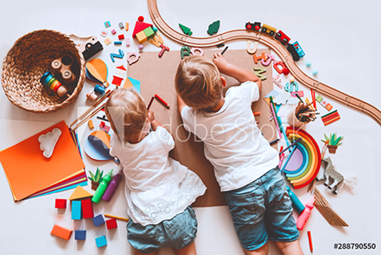

Primary
Tangible academic experiences and practical life exercises engage children in learning, in a mixed-age classroom.
LEARN MOREThe Toddler program helps to prepare the child not just for school, but also for life. The class is composed of three elements: the prepared environment , observation , and guidance . Classes focus on practical life exercises, sensory exploration, and vocabulary enrichment to help children acquire a sense of order . The Toddler classroom allows children to move easily from large muscle movement areas to fine motor exercises , including pouring, sweeping, dusting, buttoning, zipping, and table setting. A child's inclination for independence is respected by giving him skills to accomplish tasks independently . Check admissions for tuition and other details.
Teachers in this age group work hard to respond to individual children’s needs, thereby establishing trust and confidence and forming a unique, caring relationship between the teacher and child. This confidence and trust in the environment inspires children to develop independence and gives them the peace of mind to explore the environment freely at will.
A wide range of materials will be introduced for children to explore and manipulate as they gain control over these bodily functions. The vast majority of these skills will be gained through the manipulation of real-life objects and everyday practical life experiences, such as hand washing, unpacking a lunch box, toileting, cleaning up spills, and eating.
Toddler children are exploring the use of language through repetitive sounds and gestures and word association. These concepts are explored through a variety of materials, as well as the social interplay between the teachers and students, including games, songs, and conversation. Students are introduced to Montessori materials along with pre-reading and pre-math activities such as puzzles, matching, and sorting.
Toddler children are often learning social and toileting skills and beginning to take responsibility for themselves and their actions. Modeling respectful movement through the classroom shows children the importance of respecting another’s work, and the children develop language to express their thoughts and desires in a respectful way.
Tangible academic experiences and practical life exercises engage children in learning, in a mixed-age classroom.
LEARN MOREWe’re here for elementary students to help keep their studies on track this fall, and throughout the year.
LEARN MOREWe’d love to hear from you. Choose the most convenient method and we’ll get back to you as soon as we can.
Contact us